Feature statistical plots
Usage
FeatureStatPlot(
srt,
stat.by,
group.by = NULL,
split.by = NULL,
bg.by = NULL,
plot.by = c("group", "feature"),
fill.by = c("group", "feature", "expression"),
cells = NULL,
layer = "data",
assay = NULL,
keep_empty = FALSE,
individual = FALSE,
plot_type = c("violin", "box", "bar", "dot", "col"),
palette = "Chinese",
palcolor = NULL,
alpha = 1,
bg_palette = "Chinese",
bg_palcolor = NULL,
bg_alpha = 0.2,
add_box = FALSE,
box_color = "black",
box_width = 0.1,
box_ptsize = 2,
add_point = FALSE,
pt.color = "grey30",
pt.size = NULL,
pt.alpha = 1,
jitter.width = 0.4,
jitter.height = 0.1,
add_trend = FALSE,
trend_color = "black",
trend_linewidth = 1,
trend_ptsize = 2,
add_stat = c("none", "mean", "median"),
stat_color = "black",
stat_size = 1,
stat_stroke = 1,
stat_shape = 25,
add_line = NULL,
line_color = "red",
line_size = 1,
line_type = 1,
cells.highlight = NULL,
cols.highlight = "red",
sizes.highlight = 1,
alpha.highlight = 1,
calculate_coexp = FALSE,
same.y.lims = FALSE,
y.min = NULL,
y.max = NULL,
y.trans = "identity",
y.nbreaks = 5,
sort = FALSE,
stack = FALSE,
flip = FALSE,
comparisons = NULL,
ref_group = NULL,
auto_comparison = FALSE,
pairwise_method = "wilcox.test",
multiplegroup_comparisons = FALSE,
multiple_method = "kruskal.test",
sig_label = c("p.signif", "p.format"),
sig_labelsize = 3.5,
aspect.ratio = NULL,
title = NULL,
subtitle = NULL,
xlab = NULL,
ylab = "Expression level",
legend.position = "right",
legend.direction = "vertical",
legend.title = NULL,
theme_use = "theme_scop",
theme_args = list(),
grid_major = TRUE,
grid_major_colour = "grey80",
grid_major_linetype = 2,
grid_major_linewidth = 0.3,
combine = TRUE,
nrow = NULL,
ncol = NULL,
byrow = TRUE,
force = FALSE,
seed = 11,
...,
x_text_angle = 45,
verbose = TRUE
)Arguments
- srt
A
Seuratobject.- stat.by
Features to plot.
- group.by
Metadata column(s) used to color cells.
- split.by
Metadata column to facet by.
- bg.by
Metadata column used as background color.
- plot.by
"group"or"feature".- fill.by
"group","feature", or"expression".- cells
Cell names to include.
- layer
Assay layer to use.
- assay
Assay to use.
NULLuses the default assay.- keep_empty
Keep empty factor levels.
- individual
One plot per group.
- plot_type
"violin","box","bar","dot", or"col".- palette, palcolor
Palette name (thisplot::show_palettes) or custom colors.
- alpha
Plot transparency.
- bg_palette, bg_palcolor, bg_alpha
Background palette and transparency.
- add_box, box_color, box_width, box_ptsize
Overlay boxplot.
- add_point, pt.color, jitter.width, jitter.height
Overlay jittered points.
- pt.size, pt.alpha
Point size and transparency.
pt.size = NULLscales withsqrt(n)(minimum0.3). Rasterized points keep at least a two-pixel radius atraster.dpi = c(512, 512)and scale withraster.dpi.- add_trend, trend_color, trend_linewidth, trend_ptsize
Overlay trend line.
- add_stat, stat_color, stat_size, stat_stroke, stat_shape
Summary statistic (
"none","mean", or"median").- add_line, line_color, line_size, line_type
Horizontal line at this y-intercept.
- cells.highlight
Cells to highlight and their appearance.
TRUEhighlights all cells.- cols.highlight, sizes.highlight, alpha.highlight
Highlighted cells.
- calculate_coexp
Plot the geometric mean of
stat.by.- same.y.lims
Share y-axis limits across panels.
- y.min, y.max
Y-axis limits. Character values like
"q5"use that quantile.- y.trans, y.nbreaks
Y-axis transform (
"identity"or"log2") and breaks.- sort
Sort groups on the x-axis:
FALSE,TRUE/"increasing", or"decreasing".- stack
Stack plots vertically.
- flip
Flip x and y.
- comparisons, ref_group
Pairwise comparisons (length-2 name or index vectors).
- auto_comparison
Compare the highest-median group (or
ref_group) against the others. Requiressplit.by = NULL.- pairwise_method, multiplegroup_comparisons, multiple_method
Comparison tests.
- sig_label, sig_labelsize
Significance labels (
"p.signif"or"p.format").- aspect.ratio
Panel aspect ratio.
- title
Plot title.
NULLhides the title for merged/single panels. When multiple lineages are plotted andtitleisNULL, each panel is titled with its lineage column.- subtitle
Plot subtitle.
- xlab
Plot labels.
- ylab
Y-axis label.
- legend.position, legend.direction, legend.title
Legend placement (
"none","left","right","bottom","top"), direction, and title.legend.title = NULLuses the group name.- theme_use, theme_args
Theme name or function, plus extra theme arguments.
- grid_major, grid_major_colour, grid_major_linetype, grid_major_linewidth
Major panel grid lines.
- combine, nrow, ncol, byrow
Combine plots with patchwork.
combine = FALSEreturns a list of ggplots.- force
Draw even when a grouping has more than 100 levels.
- seed
Random seed.
- ...
Additional arguments passed to the plotting helpers.
- x_text_angle
Rotation of x-axis labels.
- verbose
Whether to print messages.
Examples
data(pancreas_sub)
pancreas_sub <- RunStandardWorkflow(pancreas_sub)
#> ℹ [2026-09-03 03:35:43] Start standard processing workflow...
#> ℹ [2026-09-03 03:35:43] Checking a list of <Seurat>...
#> ! [2026-09-03 03:35:43] Data 1/1 of the `srt_list` is "unknown"
#> ℹ [2026-09-03 03:35:43] Perform `NormalizeData()` with `normalization.method = 'LogNormalize'` on 1/1 of `srt_list`...
#> ℹ [2026-09-03 03:35:43] Perform `FindVariableFeatures()` on 1/1 of `srt_list`...
#> ℹ [2026-09-03 03:35:43] Use the separate HVF from `srt_list`
#> ℹ [2026-09-03 03:35:43] Number of available HVF: 2000
#> ℹ [2026-09-03 03:35:43] Finished check
#> ℹ [2026-09-03 03:35:43] Perform `ScaleData()`
#> ℹ [2026-09-03 03:35:43] Perform pca linear dimension reduction
#> ℹ [2026-09-03 03:35:44] Use stored estimated dimensions 1:23 for Standardpca
#> ℹ [2026-09-03 03:35:44] Perform `Seurat::FindClusters()` with `cluster_algorithm = 'louvain'` and `cluster_resolution = 0.6`
#> ℹ [2026-09-03 03:35:44] Reorder clusters...
#> ℹ [2026-09-03 03:35:44] Skip `log1p()` because `layer = data` is not "counts"
#> ℹ [2026-09-03 03:35:44] Perform umap nonlinear dimension reduction
#> ✔ [2026-09-03 03:35:51] Standard processing workflow completed
FeatureStatPlot(
pancreas_sub,
stat.by = c("G2M_score", "Fev"),
group.by = "SubCellType"
)
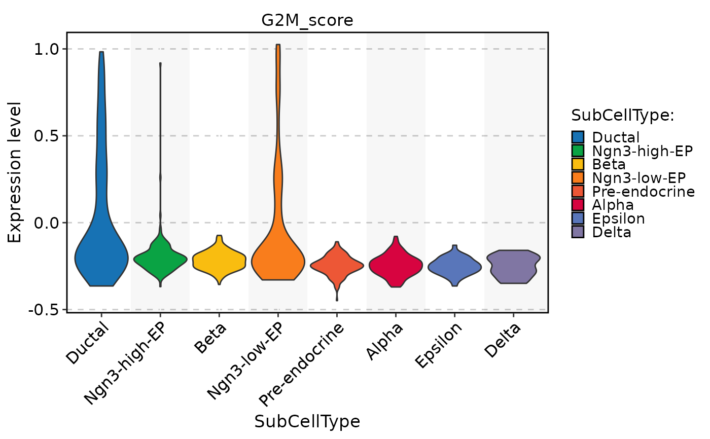
FeatureStatPlot(
pancreas_sub,
stat.by = c("G2M_score", "Fev"),
group.by = "SubCellType"
) |> thisplot::panel_fix(height = 1, width = 2)
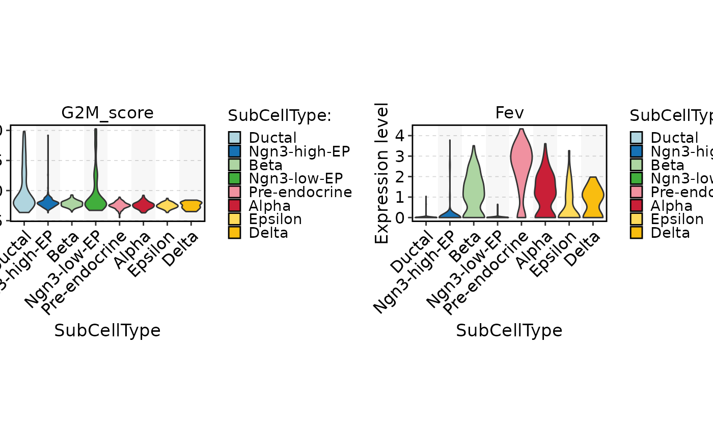
FeatureStatPlot(
pancreas_sub,
stat.by = c("G2M_score", "Fev"),
group.by = "SubCellType",
plot_type = "box"
)
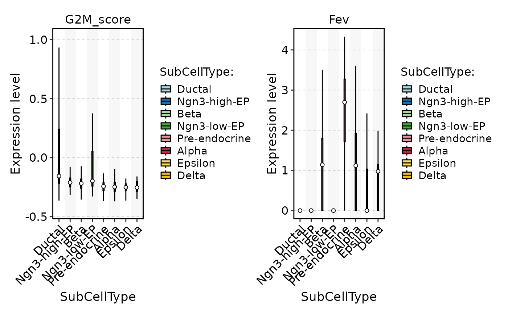
FeatureStatPlot(
pancreas_sub,
stat.by = c("G2M_score", "Fev"),
group.by = "SubCellType",
plot_type = "bar"
)
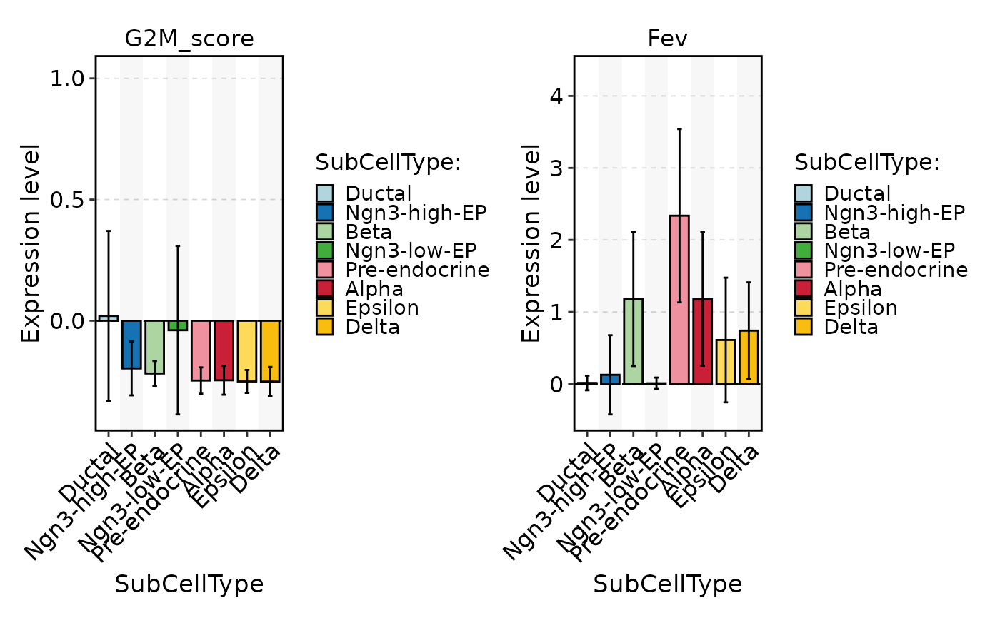
FeatureStatPlot(
pancreas_sub,
stat.by = c("G2M_score", "Fev"),
group.by = "SubCellType",
plot_type = "dot"
)
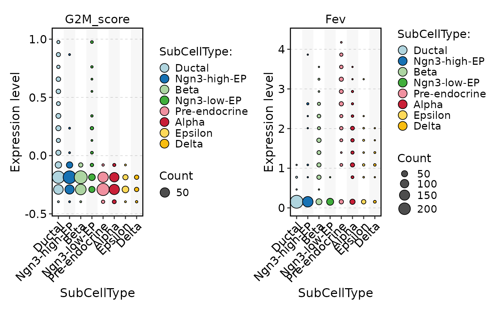
FeatureStatPlot(
pancreas_sub,
stat.by = c("G2M_score", "Fev"),
group.by = "SubCellType",
plot_type = "col"
)
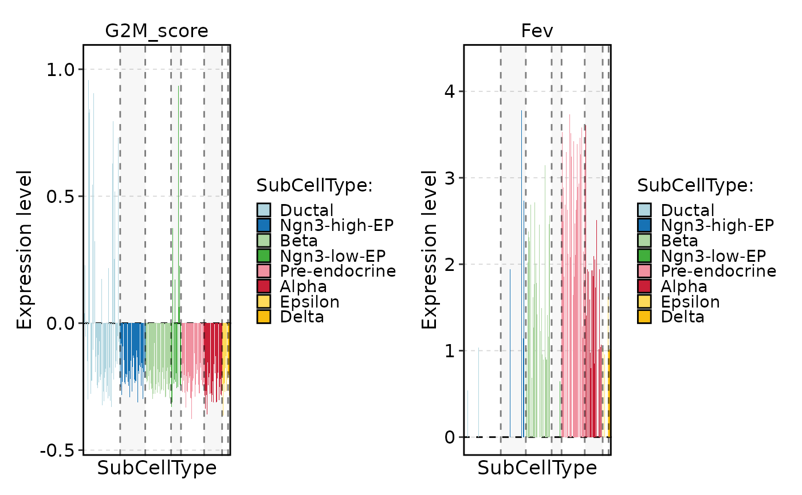
FeatureStatPlot(
pancreas_sub,
stat.by = c("G2M_score", "Fev"),
group.by = "SubCellType",
add_box = TRUE
)
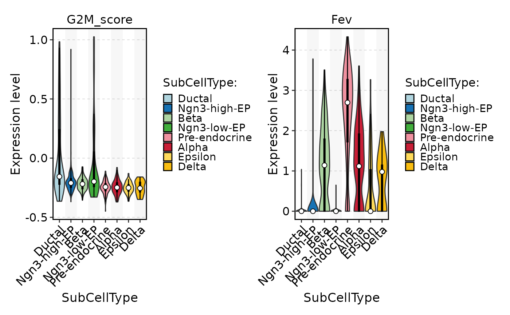
FeatureStatPlot(
pancreas_sub,
stat.by = c("G2M_score", "Fev"),
group.by = "SubCellType",
add_point = TRUE
)
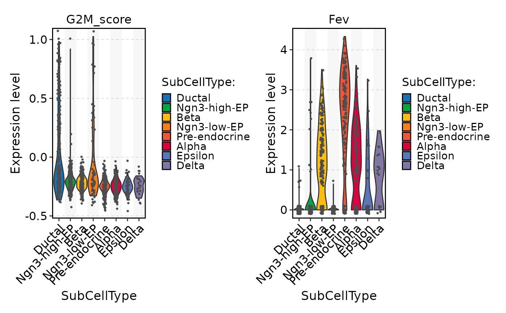
FeatureStatPlot(
pancreas_sub,
stat.by = c("G2M_score", "Fev"),
group.by = "SubCellType",
add_trend = TRUE
)
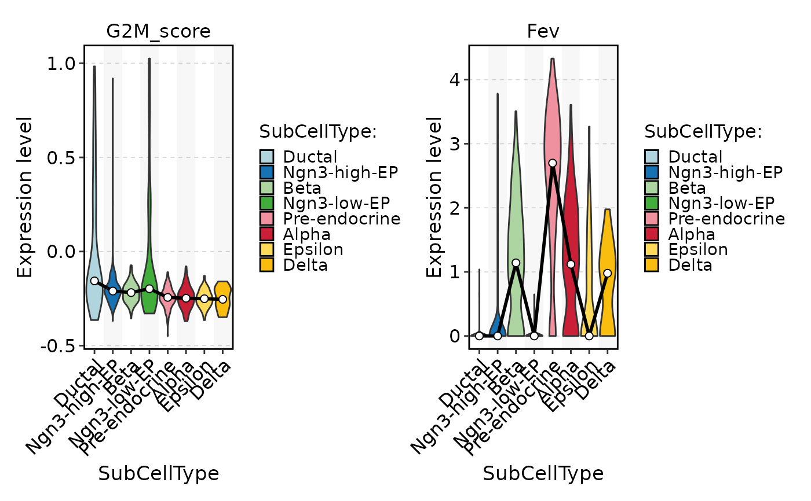
FeatureStatPlot(
pancreas_sub,
stat.by = c("G2M_score", "Fev"),
group.by = "SubCellType",
add_stat = "mean"
)
FeatureStatPlot(
pancreas_sub,
stat.by = c("G2M_score", "Fev"),
group.by = "SubCellType",
add_line = 0.2,
line_type = 2
)
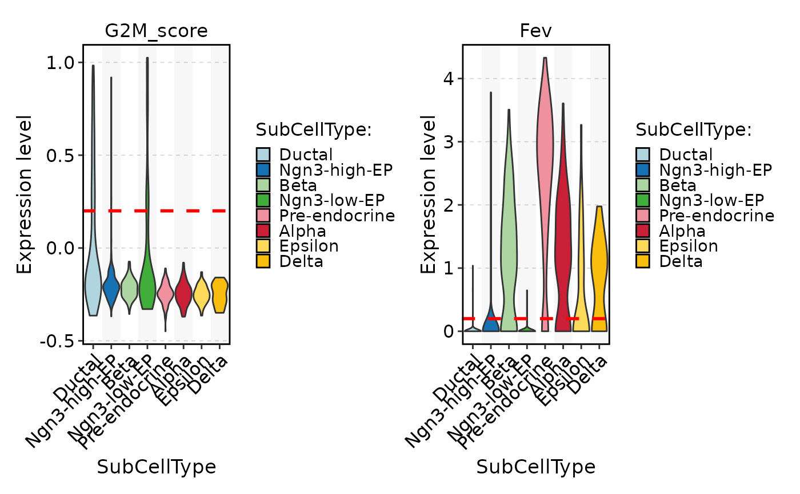
FeatureStatPlot(
pancreas_sub,
stat.by = c("G2M_score", "Fev"),
group.by = "SubCellType",
split.by = "Phase"
)
#> ! [2026-09-03 03:36:00] Removed 10 groups with < 2 observations for violin plot: "sp-S-gp-Beta", "sp-G2M-gp-Beta", "sp-S-gp-Pre-endocrine", "sp-G2M-gp-Pre-endocrine", "sp-S-gp-Alpha", "sp-G2M-gp-Alpha", "sp-S-gp-Epsilon", "sp-G2M-gp-Epsilon", "sp-S-gp-Delta", and "sp-G2M-gp-Delta"
#> ! [2026-09-03 03:36:00] Removed 10 groups with < 2 observations for violin plot: "sp-S-gp-Beta", "sp-G2M-gp-Beta", "sp-S-gp-Pre-endocrine", "sp-G2M-gp-Pre-endocrine", "sp-S-gp-Alpha", "sp-G2M-gp-Alpha", "sp-S-gp-Epsilon", "sp-G2M-gp-Epsilon", "sp-S-gp-Delta", and "sp-G2M-gp-Delta"
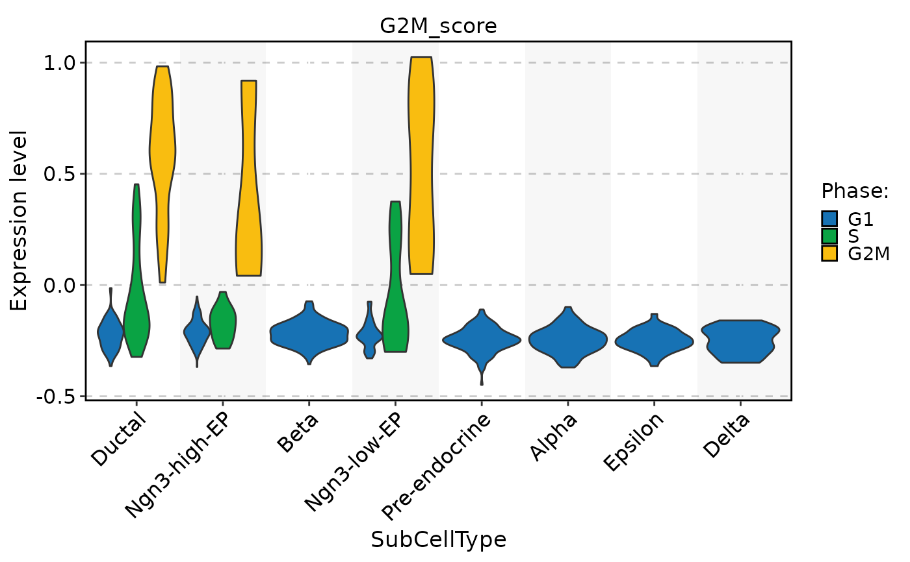
FeatureStatPlot(
pancreas_sub,
stat.by = c("G2M_score", "Fev"),
group.by = "SubCellType",
split.by = "Phase",
add_box = TRUE,
add_trend = TRUE
)
#> ! [2026-09-03 03:36:01] Removed 10 groups with < 2 observations for violin plot: "sp-S-gp-Beta", "sp-G2M-gp-Beta", "sp-S-gp-Pre-endocrine", "sp-G2M-gp-Pre-endocrine", "sp-S-gp-Alpha", "sp-G2M-gp-Alpha", "sp-S-gp-Epsilon", "sp-G2M-gp-Epsilon", "sp-S-gp-Delta", and "sp-G2M-gp-Delta"
#> ! [2026-09-03 03:36:01] Removed 10 groups with < 2 observations for violin plot: "sp-S-gp-Beta", "sp-G2M-gp-Beta", "sp-S-gp-Pre-endocrine", "sp-G2M-gp-Pre-endocrine", "sp-S-gp-Alpha", "sp-G2M-gp-Alpha", "sp-S-gp-Epsilon", "sp-G2M-gp-Epsilon", "sp-S-gp-Delta", and "sp-G2M-gp-Delta"
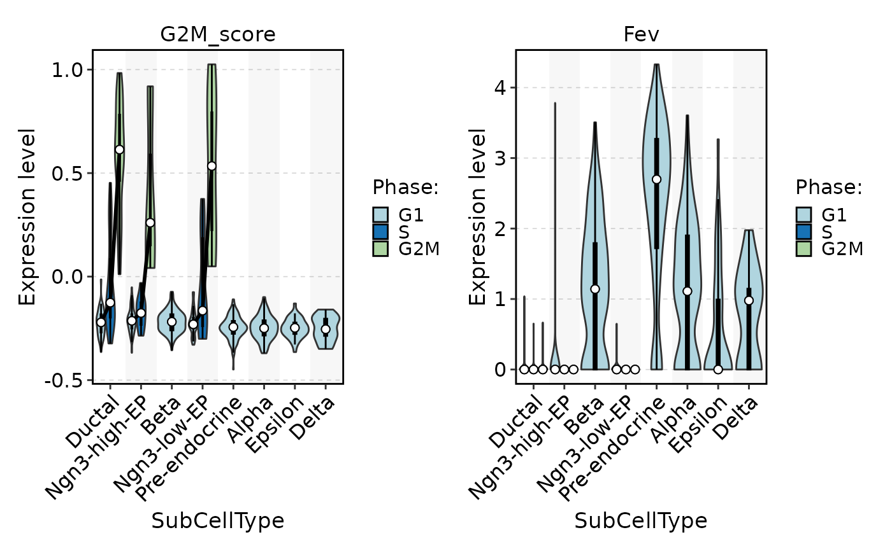
FeatureStatPlot(
pancreas_sub,
stat.by = c("G2M_score", "Fev"),
group.by = "SubCellType",
split.by = "Phase",
comparisons = TRUE
)
#> ! [2026-09-03 03:36:03] Removed 10 groups with < 2 observations for violin plot: "sp-S-gp-Beta", "sp-G2M-gp-Beta", "sp-S-gp-Pre-endocrine", "sp-G2M-gp-Pre-endocrine", "sp-S-gp-Alpha", "sp-G2M-gp-Alpha", "sp-S-gp-Epsilon", "sp-G2M-gp-Epsilon", "sp-S-gp-Delta", and "sp-G2M-gp-Delta"
#> ℹ [2026-09-03 03:36:03] Detected more than 2 groups. Use "kruskal.test" for comparison
#> ! [2026-09-03 03:36:03] Removed 10 groups with < 2 observations for violin plot: "sp-S-gp-Beta", "sp-G2M-gp-Beta", "sp-S-gp-Pre-endocrine", "sp-G2M-gp-Pre-endocrine", "sp-S-gp-Alpha", "sp-G2M-gp-Alpha", "sp-S-gp-Epsilon", "sp-G2M-gp-Epsilon", "sp-S-gp-Delta", and "sp-G2M-gp-Delta"
#> ℹ [2026-09-03 03:36:03] Detected more than 2 groups. Use "kruskal.test" for comparison
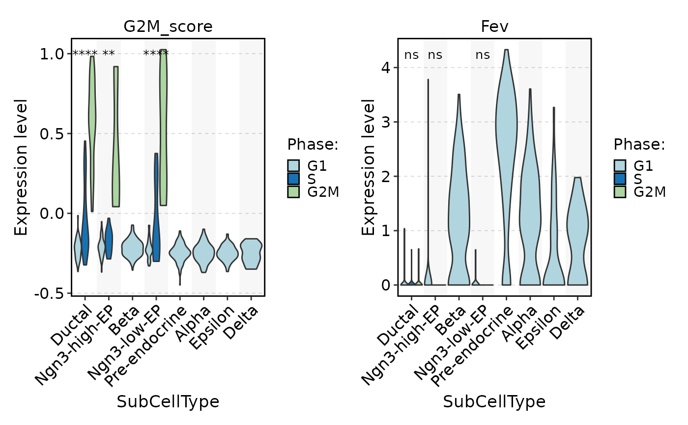
FeatureStatPlot(
pancreas_sub,
stat.by = c("Rbp4", "Pyy"),
group.by = "SubCellType",
fill.by = "expression",
palette = "Blues",
same.y.lims = TRUE
)
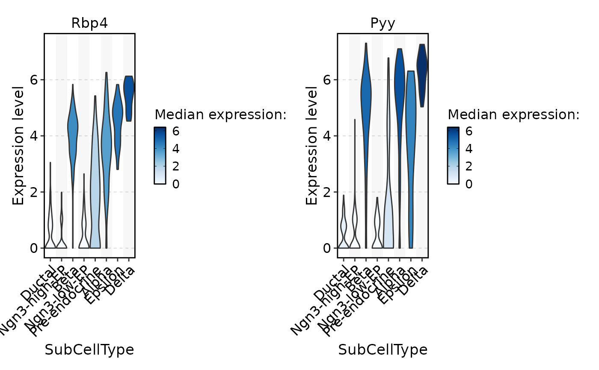
FeatureStatPlot(
pancreas_sub,
stat.by = c("Rbp4", "Pyy"),
group.by = "SubCellType",
multiplegroup_comparisons = TRUE
)
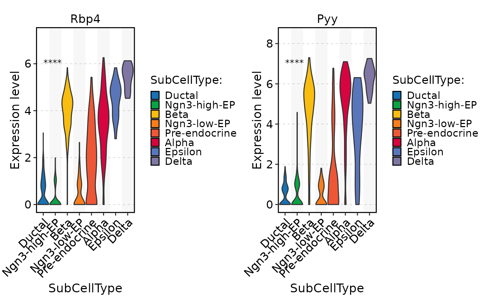
FeatureStatPlot(
pancreas_sub,
stat.by = c("Rbp4", "Pyy"),
group.by = "SubCellType",
auto_comparison = TRUE,
sig_label = "p.signif"
)
#> `stat_compare_means()` with `comparisons` displays *unadjusted* p-values (no correction for multiple comparisons).
#> ℹ For p-values adjusted for multiple comparisons, use `geom_pwc()`, or `stat_pvalue_manual()` together with `compare_means(..., p.adjust.method = )`.
#> This message is displayed once per session.
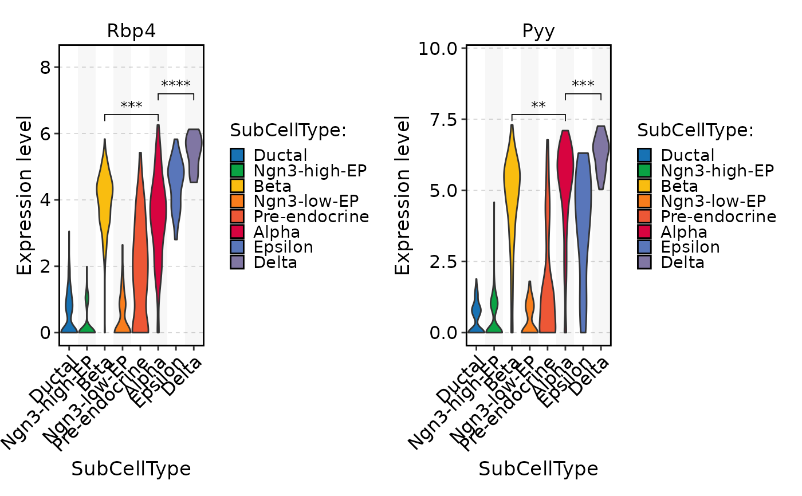
FeatureStatPlot(
pancreas_sub,
stat.by = c("Rbp4", "Pyy"),
group.by = "SubCellType",
comparisons = list(c("Alpha", "Beta"), c("Alpha", "Delta"))
)
FeatureStatPlot(
pancreas_sub,
stat.by = c("Rbp4", "Pyy"),
group.by = "SubCellType",
comparisons = list(c("Alpha", "Beta"), c("Alpha", "Delta")),
sig_label = "p.format"
)
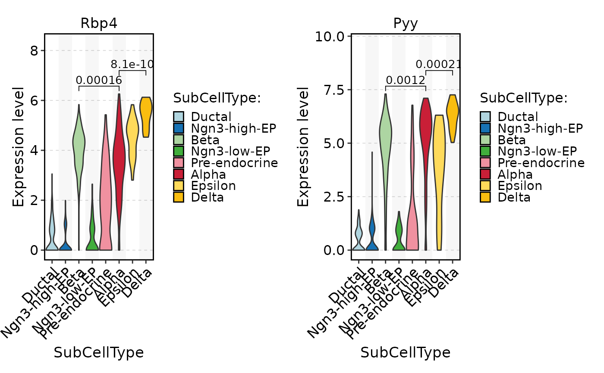
FeatureStatPlot(
pancreas_sub,
stat.by = "Fev",
group.by = "SubCellType",
split.by = "Phase",
comparisons = TRUE
) + FeatureStatPlot(
pancreas_sub,
stat.by = "Fev",
group.by = "SubCellType",
split.by = "Phase",
comparisons = TRUE,
y.max = 5
)
#> ! [2026-09-03 03:36:11] Removed 10 groups with < 2 observations for violin plot: "sp-S-gp-Beta", "sp-G2M-gp-Beta", "sp-S-gp-Pre-endocrine", "sp-G2M-gp-Pre-endocrine", "sp-S-gp-Alpha", "sp-G2M-gp-Alpha", "sp-S-gp-Epsilon", "sp-G2M-gp-Epsilon", "sp-S-gp-Delta", and "sp-G2M-gp-Delta"
#> ℹ [2026-09-03 03:36:11] Detected more than 2 groups. Use "kruskal.test" for comparison
#> ! [2026-09-03 03:36:11] Removed 10 groups with < 2 observations for violin plot: "sp-S-gp-Beta", "sp-G2M-gp-Beta", "sp-S-gp-Pre-endocrine", "sp-G2M-gp-Pre-endocrine", "sp-S-gp-Alpha", "sp-G2M-gp-Alpha", "sp-S-gp-Epsilon", "sp-G2M-gp-Epsilon", "sp-S-gp-Delta", and "sp-G2M-gp-Delta"
#> ℹ [2026-09-03 03:36:11] Detected more than 2 groups. Use "kruskal.test" for comparison
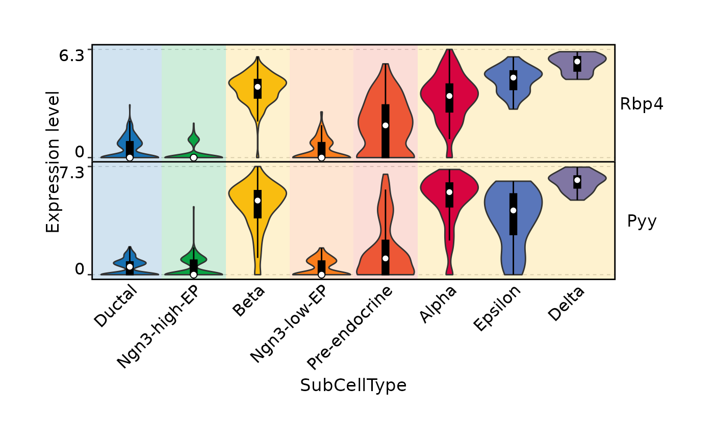
FeatureStatPlot(
pancreas_sub,
stat.by = c("Rbp4", "Pyy"),
group.by = "SubCellType",
bg.by = "CellType",
add_box = TRUE, stack = TRUE
)
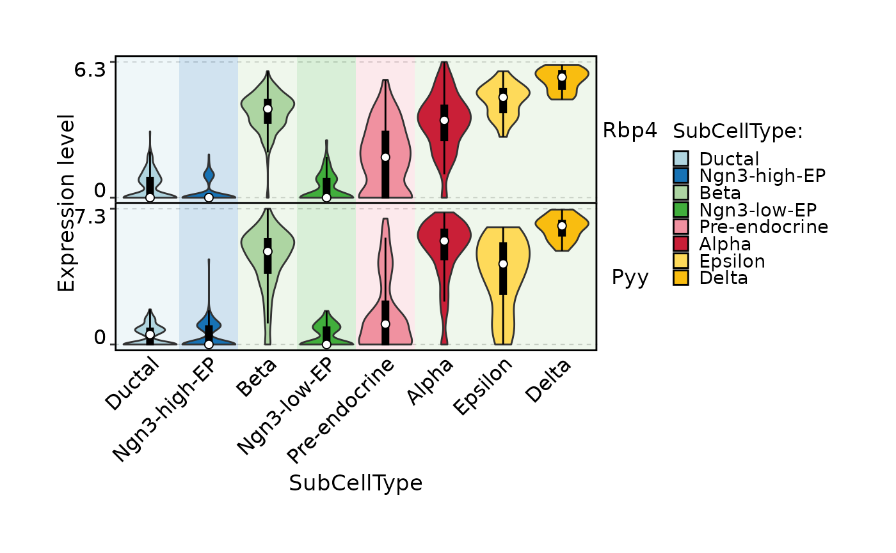
FeatureStatPlot(
pancreas_sub,
stat.by = c(
# Ductal
"Sox9", "Anxa2", "Bicc1",
# EPs
"Neurog3", "Hes6",
# Pre-endocrine
"Fev", "Neurod1",
# Endocrine
"Rbp4", "Pyy",
# Beta, Alpha, Delta, Epsilon
"Ins1", "Gcg", "Sst", "Ghrl"
),
legend.position = "top",
legend.direction = "horizontal",
group.by = "SubCellType",
bg.by = "CellType",
stack = TRUE
)
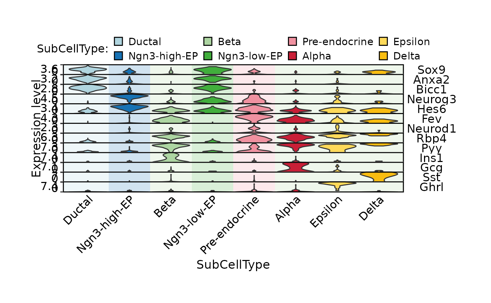
FeatureStatPlot(
pancreas_sub,
stat.by = c(
# Ductal
"Sox9", "Anxa2", "Bicc1",
# EPs
"Neurog3", "Hes6",
# Pre-endocrine
"Fev", "Neurod1",
# Endocrine
"Rbp4", "Pyy",
# Beta, Alpha, Delta, Epsilon
"Ins1", "Gcg", "Sst", "Ghrl"
),
fill.by = "feature",
plot_type = "box",
group.by = "SubCellType",
bg.by = "CellType", stack = TRUE, flip = TRUE
) |> thisplot::panel_fix_overall(
width = 8, height = 5
)
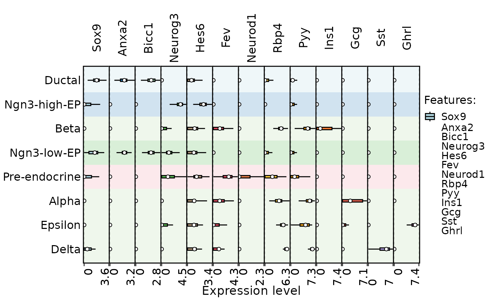
FeatureStatPlot(
pancreas_sub,
stat.by = c("Neurog3", "Rbp4", "Ins1"),
group.by = "CellType",
plot.by = "group"
)
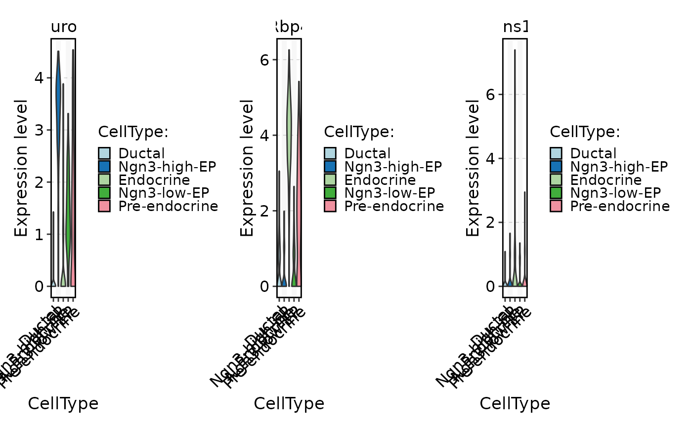
FeatureStatPlot(
pancreas_sub,
stat.by = c("Neurog3", "Rbp4", "Ins1"),
group.by = "CellType",
plot.by = "feature"
)
#> ℹ [2026-09-03 03:36:23] Setting `group.by` to "Features" as `plot.by` is set to "feature"
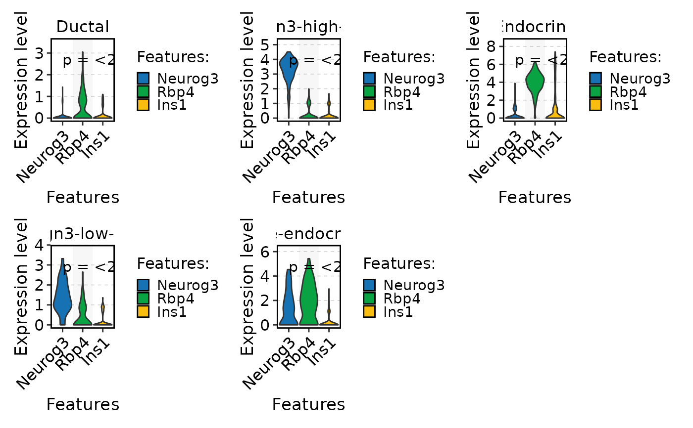
FeatureStatPlot(
pancreas_sub,
stat.by = c("Neurog3", "Rbp4", "Ins1"),
group.by = "CellType",
plot.by = "feature",
multiplegroup_comparisons = TRUE,
sig_label = "p.format",
sig_labelsize = 4
)
#> ℹ [2026-09-03 03:36:24] Setting `group.by` to "Features" as `plot.by` is set to "feature"
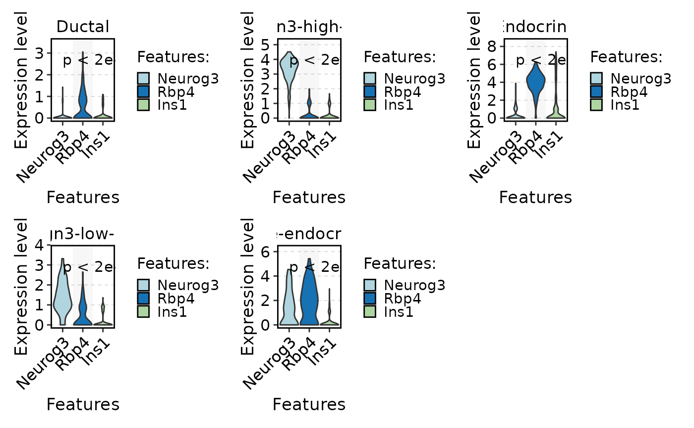
FeatureStatPlot(
pancreas_sub,
stat.by = c("Neurog3", "Rbp4", "Ins1"),
group.by = "CellType",
plot.by = "feature",
comparisons = list(
c("Neurog3", "Rbp4"),
c("Rbp4", "Ins1")
),
stack = TRUE
)
#> ℹ [2026-09-03 03:36:27] Setting `group.by` to "Features" as `plot.by` is set to "feature"
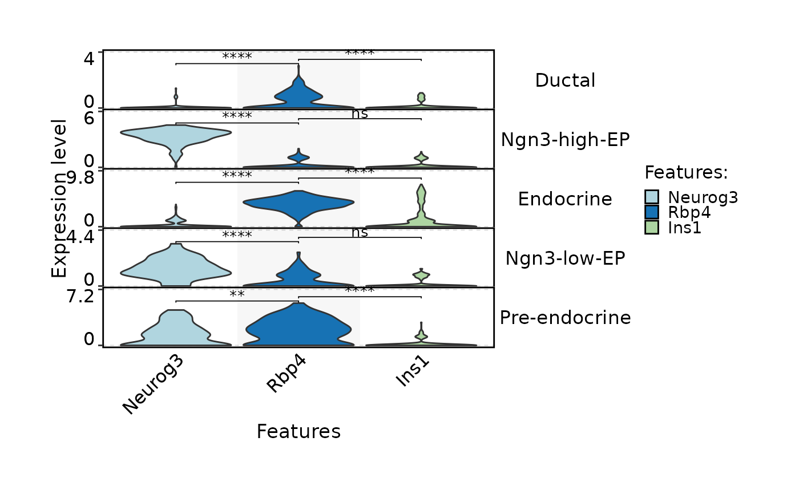
FeatureStatPlot(pancreas_sub,
stat.by = c(
# Ductal
"Sox9", "Anxa2", "Bicc1",
# EPs
"Neurog3", "Hes6",
# Pre-endocrine
"Fev", "Neurod1",
# Endocrine
"Rbp4", "Pyy",
# Beta, Alpha, Delta, Epsilon
"Ins1", "Gcg", "Sst", "Ghrl"
),
group.by = "SubCellType",
plot.by = "feature",
stack = TRUE
)
#> ℹ [2026-09-03 03:36:30] Setting `group.by` to "Features" as `plot.by` is set to "feature"
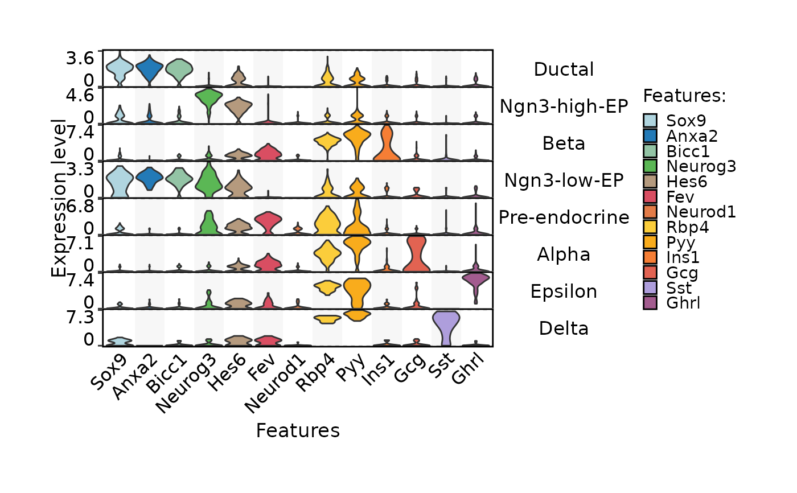
data <- GetAssayData5(
pancreas_sub,
assay = "RNA",
layer = "data"
)
pancreas_sub <- SeuratObject::SetAssayData(
object = pancreas_sub,
layer = "scale.data",
assay = "RNA",
new.data = data / Matrix::rowMeans(data)
)
FeatureStatPlot(
pancreas_sub,
stat.by = c("Neurog3", "Rbp4"),
group.by = "CellType",
layer = "scale.data",
ylab = "FoldChange",
same.y.lims = TRUE,
y.max = 4
)
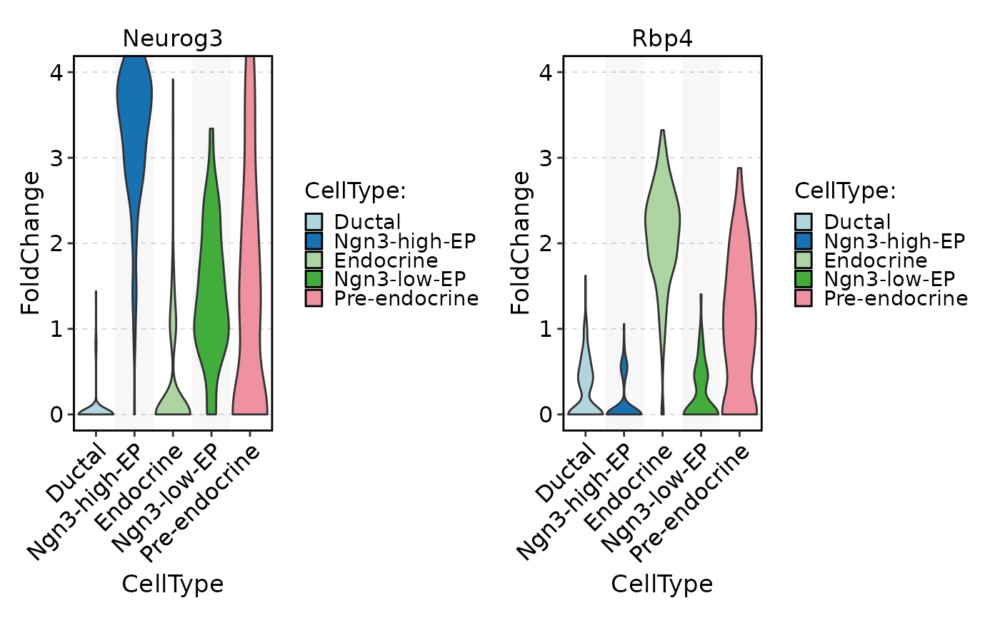